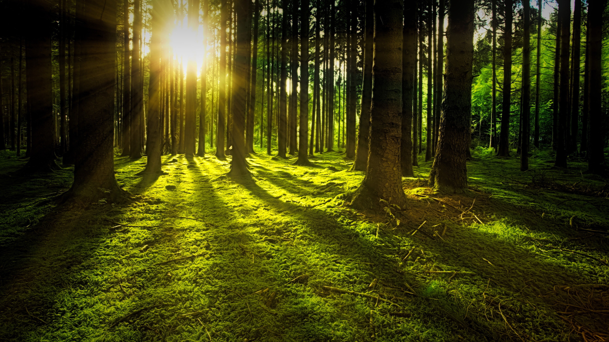
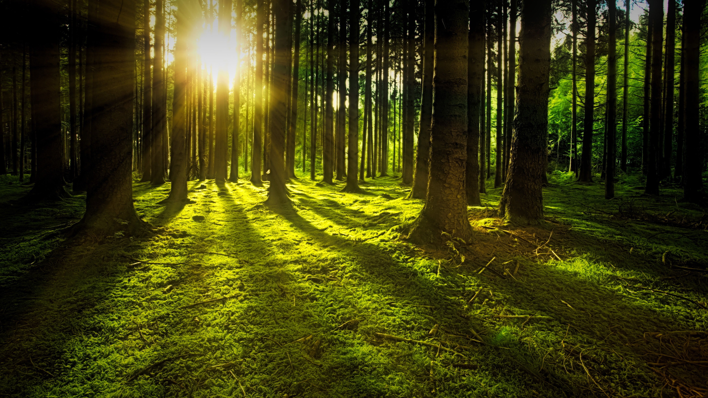
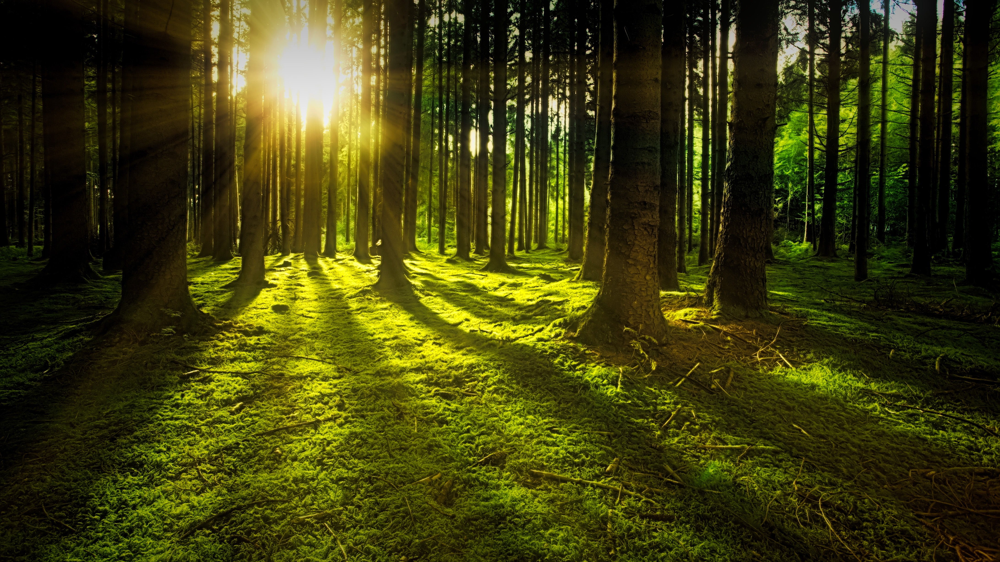

NATURE
Here, you will find some interesting images that may make you have a better appreciation for mother nature
 

A grid of images about nature
This is the landing spot for this barebones website. This
website does not have many cool features like games, media
files, ninja tricks, cooking tips, or the bare minimum - good
css!
Anyway, here is a random image about
technology for your veiwing pleasure.
Here, you will find some interesting images that may make you have a better appreciation for mother nature

A grid of images about nature
Whats life without a little spice?
Here you will find a few cuisines I have curated across various cultures of the world.